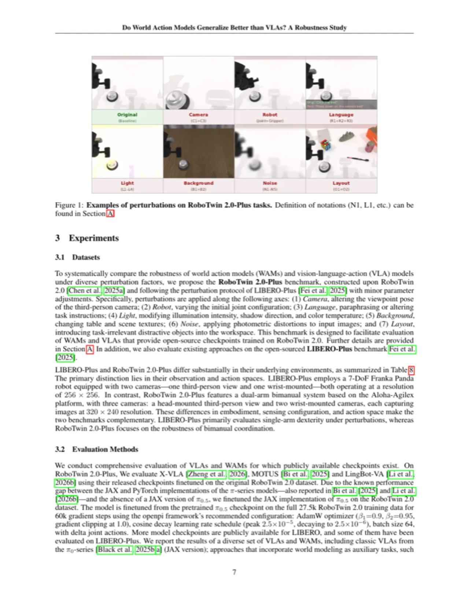
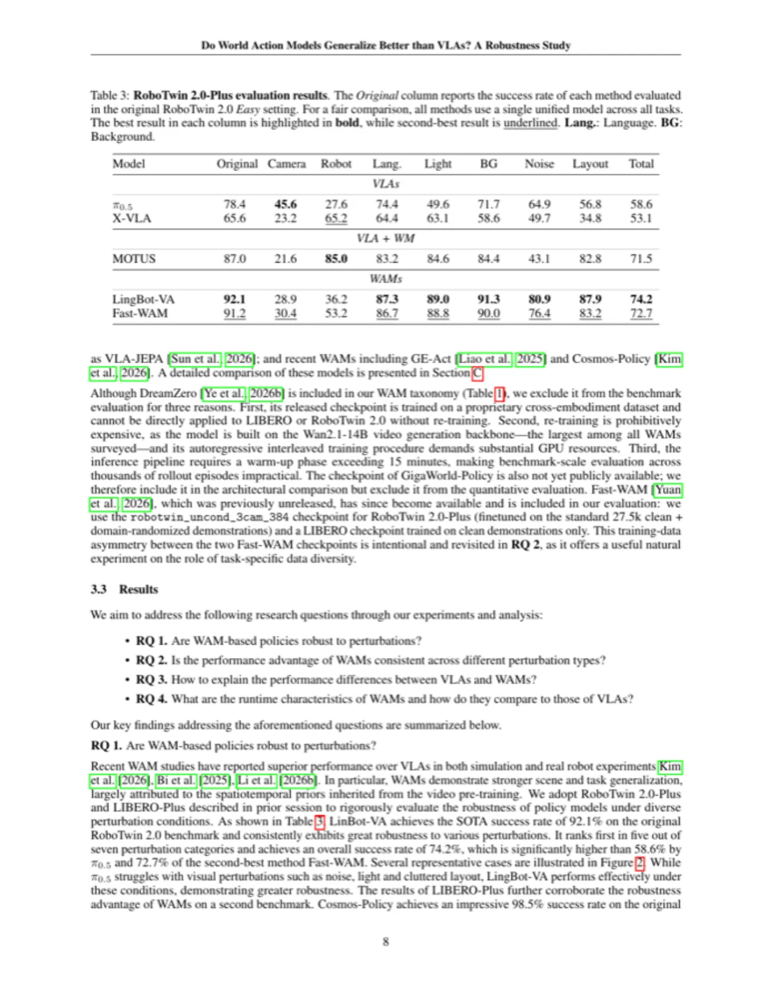
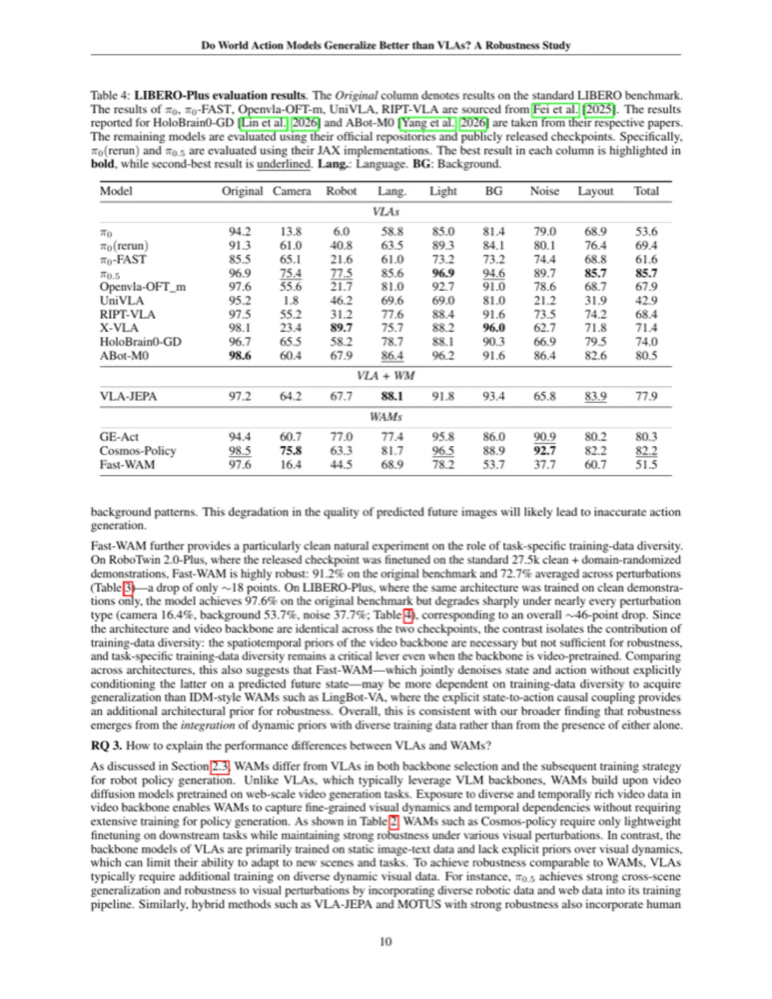
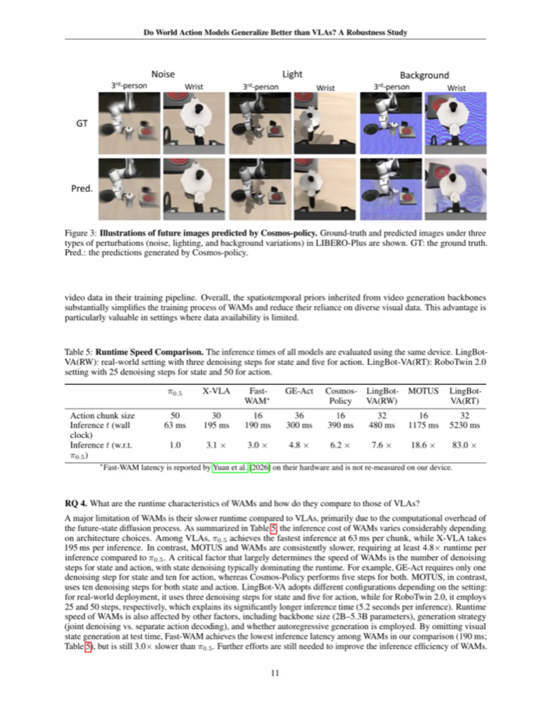
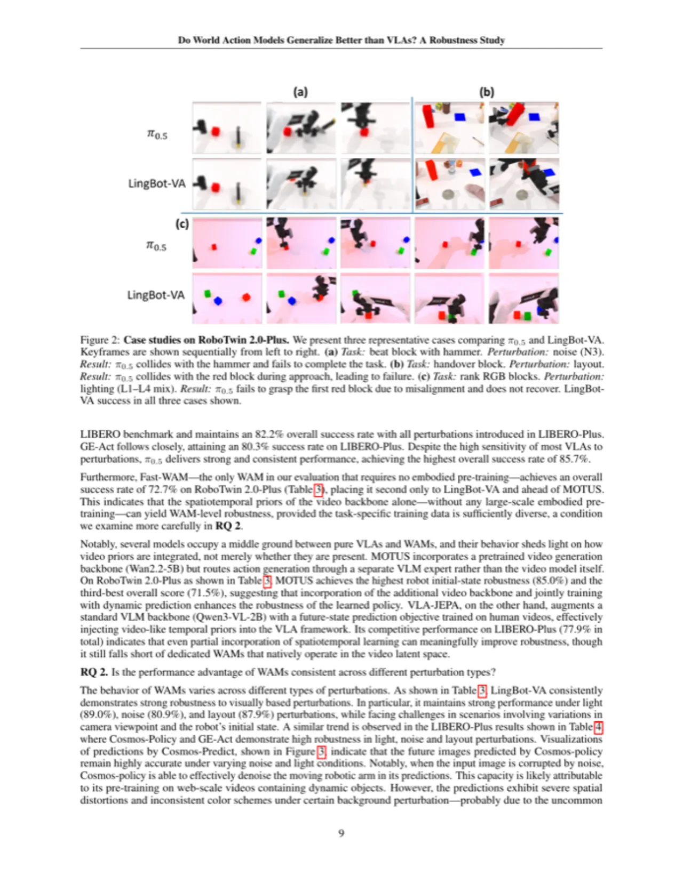

本文在两个新增扰动基准（LIBERO-Plus 和 RoboTwin 2.0-Plus）上系统对比了最新 WAM（World Action Model）与 VLA（Vision-Language-Action）策略在视觉和语言扰动下的鲁棒性。实验表明，WAM 凭借视频预训练的时空先验在噪声、光照、布局扰动上表现出显著优势，但在推理速度上至少慢 π0.5 的 4.8 倍，真实部署仍面临挑战。
VLA 策略已在多种机器人任务上取得突出成果，但受训练数据范围限制，面对视觉和语言扰动时表现出明显的脆弱性。世界模型（World Models）被寄望于通过对未来视觉状态的显式预测来弥补这一缺陷，这类以世界模型为基础的策略被称为 World Action Model（WAM）。然而，WAM 相比 VLA 究竟是否真正拥有更强的泛化能力，此前缺乏系统性的实证研究。
"We conduct a comparative study of prominent state-of-the-art VLA policies and recently released WAMs. We evaluate their performance on the LIBERO-Plus and RoboTwin 2.0-Plus benchmarks under various visual and language perturbations."

本研究聚焦于以下四个研究问题：
本研究并非提出新方法，而是构建新的评估基准并系统地对比现有 WAM 与 VLA 方法。核心贡献包括：（1）提出 RoboTwin 2.0-Plus 基准；（2）在两个互补基准上对 5 类 VLA 和 6 类 WAM 进行统一评测；（3）从架构设计、训练数据和推理速度三个维度分析二者差异。
作者在原有基准上引入七类系统性扰动，构建了两个互补评测平台：
七类扰动轴为：摄像机视角（Camera）、机器人初始位姿（Robot）、语言指令改写（Language）、光照条件（Light）、背景纹理（Background）、图像噪声（Noise）、干扰物布局（Layout）。
以 VLM 为骨干，基于静态图文数据预训练。典型预测形式为 pθ(at | ht)，直接从当前状态预测动作。需要大量多样化的跨机器人数据和视频数据来隐式习得物理动态先验。代表模型：π0、π0.5、OpenVLA-OFT、X-VLA、RIPT-VLA。
以大规模视频生成模型（如 Cosmos-Predict2、Wan2.x 系列）为骨干，预训练阶段即学习 pφ(ht+1 | ht)。动作生成采用逆动态模型（IDM）范式 gψ(at | ht, ht+1)，或联合去噪生成视觉状态与动作。代表模型：Cosmos-Policy、LingBot-VA、GE-Act、DreamZero、GigaWorld-Policy、Fast-WAM。
| 模型 | 参数量 | 骨干模型 | Pretrain Free | Causal Pred. | AR Gen. |
|---|---|---|---|---|---|
| VPP | 1.5B | Stable Video Diffusion | ✗ | ✓ | ✗ |
| GE-Act | 2.2B | LTX-Video-2B | ✗ | ✗ | ✓ |
| Cosmos-Policy | 2B | Cosmos-Predict2-2B | ✓ | ✗ | ✗ |
| LingBot-VA | 5.3B | Wan2.2-5B | ✗ | ✓ | ✓ |
| DreamZero | 14B | Wan2.1-14B | ✗ | ✗ | ✓ |
| GigaWorld-Policy | >5B | Wan2.2-5B | ✗ | ✗ | ✗ |
| Fast-WAM | 6B | Wan2.2-5B | ✓ | ✗ | ✗ |
MOT = mixture-of-transformers；Causal Pred. = 动作预测以生成的视觉状态为条件（或反之）；AR Gen. = 自回归生成；Pretrain Free = 无需具身预训练阶段。
在 RoboTwin 2.0-Plus 和 LIBERO-Plus 两个基准上对 VLA、VLA+WM 混合和 WAM 方法进行全面评测，所有模型使用各自公开的 checkpoint，采用单一统一模型跨任务评估。

| 模型 | 类型 | Original | Camera | Robot | Lang. | Light | BG | Noise | Layout | Total |
|---|---|---|---|---|---|---|---|---|---|---|
| π0.5 | VLA | 78.4 | 45.6 | 27.6 | 74.4 | 49.6 | 64.9 | 56.8 | 58.6 | 58.6 |
| X-VLA | VLA | 65.6 | 23.2 | 65.2 | 64.4 | 63.1 | 49.7 | 34.8 | 53.1 | 53.1 |
| MOTUS | VLA+WM | 87.0 | 21.6 | 85.0 | 83.2 | 84.6 | 84.4 | 43.1 | 82.8 | 71.5 |
| LingBot-VA | WAM | 92.1 | 28.9 | 36.2 | 87.3 | 89.0 | 88.8 | 80.9 | 87.9 | 74.2 |
| Fast-WAM | WAM | 91.2 | 30.4 | 53.2 | 86.7 | 88.4 (est.) | — | 76.4 | 83.2 | 72.7 |

| 模型 | 类型 | Original | Camera | Robot | Light | BG | Noise | Layout | Total |
|---|---|---|---|---|---|---|---|---|---|
| π0 | VLA | 94.2 | 13.8 | 6.0 | 85.0 | 81.4 | 79.0 | 68.9 | 53.6 |
| π0.5 | VLA | 96.9 | 75.4 | 77.5 | 96.9 | 94.6 | 89.7 | 85.7 | 85.7 |
| UniVLA | VLA | 95.2 | 1.8 | 46.2 | 69.0 | 81.0 | 21.2 | 31.9 | 42.9 |
| VLA-JEPA | VLA+WM | 97.2 | 64.2 | 67.7 | 91.8 | 93.4 | 65.8 | 83.9 | 77.9 |
| GE-Act | WAM | 94.4 | 60.7 | 77.0 | 95.8 | 86.0 | 90.9 | 80.2 | 80.3 |
| Cosmos-Policy | WAM | 98.5 | 75.8 | 63.3 | 96.5 | 88.9 | 92.7 | 82.2 | 82.2 |
| Fast-WAM | WAM | 97.6 | 16.4 | 44.5 | 78.2 | 53.7 | 37.7 | 60.7 | 51.5 |


| 模型 | 动作块大小 | 推理时间（wall clock） | 相对 π0.5 倍数 |
|---|---|---|---|
| π0.5 | 50 | 63 ms | 1.0× |
| X-VLA | 30 | 195 ms | 3.1× |
| Fast-WAM | 16 | 190 ms* | 3.0× |
| GE-Act | 36 | 300 ms | 4.8× |
| Cosmos-Policy | 16 | 390 ms | 6.2× |
| LingBot-VA (RW) | 32 | 480 ms | 7.6× |
| MOTUS | 16 | 1175 ms | 18.6× |
| LingBot-VA (RT) | 32 | 5230 ms | 83.0× |
*Fast-WAM 延迟数据来自 Yuan et al. [2026]，未在本文硬件上重新测量。LingBot-VA(RW) = 实际部署配置（3步去噪视觉 + 5步去噪动作）；LingBot-VA(RT) = RoboTwin 2.0 评测配置（25步 + 50步），达到 5.2 秒/推理。
WAM 推理至少比 π0.5 慢 4.8 倍（GE-Act: 300 ms vs. π0.5: 63 ms），最慢的 LingBot-VA 在 RoboTwin 评测配置下达到 5.2 秒/推理（83× 倍）。"This underscores a key practical challenge for WAMs and highlights the need for further research to improve their inference efficiency, enabling deployment in scenarios that require rapid response time or real-time interaction with dynamic environments."
WAM 在噪声、光照、布局扰动上鲁棒性强，但"camera viewpoint and robot initial-state perturbations remain challenging for WAMs, indicating that video priors offer limited benefit when the geometric configuration of the scene is altered." LingBot-VA 在摄像机扰动上的成功率仅 28.9%，与 VLA 相差无几。
Fast-WAM 在仅使用干净演示的 LIBERO 训练集上，鲁棒性相比使用域随机化数据的 RoboTwin 版本大幅下降（综合成功率 51.5% vs. 72.7%）。"the WAM video prior is necessary but not sufficient—task-specific training-data diversity remains essential." 尤其是联合去噪架构（joint-denoising，如 Fast-WAM）对训练数据多样性的依赖程度可能高于 IDM 风格的 WAM（如 LingBot-VA）。
DreamZero（14B Wan2.1 骨干）因其专有预训练数据集和极高计算成本（推理预热超过 15 分钟）被排除在评测外；GigaWorld-Policy 的 checkpoint 尚未公开。本文评测因此未能涵盖全部已知 WAM，结论的普适性有所局限。
π0.5 在 LIBERO-Plus 上以 85.7% 的综合成功率领先所有方法，包括最优 WAM（Cosmos-Policy 82.2%）。这说明 VLA 通过引入多样化机器人数据和网络视频数据进行训练，同样可以达到与 WAM 相当的鲁棒性，WAM 的优势并非在所有场景下都能体现。